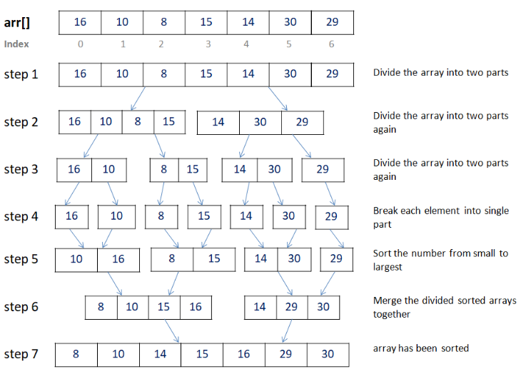

Week 2 — Divide & Conquer Foundations
Due this week
| Item | Type | Note |
|---|---|---|
| HW2 | written | D&C problems |
| Quiz 2 | format | how D&C answers are graded |
| Logistics quizzes | onboarding | due Week 2 |
Watch the lecture (D&C Foundations)
Learning objectives
- Set up and solve a divide-and-conquer recurrence with the Master theorem.
- Use the recursion-tree view to explain why each Master case holds.
- Derive Karatsuba integer multiplication and its O(nlog23) exponent.
- Write a D&C answer as a narrative: algorithm → correctness → runtime (no pseudocode when words are asked).
Core concepts
The divide-and-conquer schema
Definition. Split the input into a subproblems of size n/b, solve recursively, then combine in O(nd). Intuition: the recurrence's behavior is a race between how fast subproblems multiply (a) and how fast they shrink (b), measured against the combine cost (nd).
Master theorem
For T(n) = a T(n/b) + O(nd) with a ≥ 1, b > 1, d ≥ 0: $$ T(n)= \begin{cases} O(n^d) & d > \log_b a \quad(\text{top-heavy: root dominates}),\\ O(n^d \log n) & d = \log_b a \quad(\text{balanced: } \log n \text{ equal levels}),\\ O\!\left(n^{\log_b a}\right) & d < \log_b a \quad(\text{leaf-heavy: leaves dominate}). \end{cases} $$
Key idea. One comparison decides everything: d vs logba is work-at-the-root vs work-at-the-leaves.
Recursion-tree intuition (why the cases hold)
- Level k has ak nodes, each of size n/bk, doing O((n/bk)d) work.
- Per-level work = ak(n/bk)d = nd(a/bd)k
— a geometric series in ratio a/bd.
- ratio < 1 → series dominated by the top level → O(nd).
- ratio = 1 → all logbn levels equal → O(ndlog n).
- ratio > 1 → dominated by the bottom (leaves, count nlogba) → O(nlogba).
Fast integer multiplication (Karatsuba)
Split each n-digit number: x = a B + b, y = c B + d with B = 10n/2. Naively xy needs 4 half-size products (ac, ad, bc, bd). Karatsuba computes it with 3 using the identity xy = ac B2 + [(a + b)(c + d) − ac − bd]B + bd, where the middle term reuses ac and bd. Recurrence and solution: T(n) = 3 T(n/2) + O(n) ⇒ T(n) = O (nlog23) = O(n1.585).
Why it wins. Dropping 4→3 subproblems lowers logba from log24 = 2 to log23 ≈ 1.585; since d = 1 < log23, the leaf-heavy case applies.
Algorithms — recurrence reference
| Recurrence | a, b, d | vs logba | Solves to | Example |
|---|---|---|---|---|
| T(n) = 2T(n/2) + O(n) | 2, 2, 1 | d = logba | O(nlog n) | mergesort, binary D&C |
| T(n) = 3T(n/2) + O(n) | 3, 2, 1 | d < logba | O(n1.585) | Karatsuba |
| T(n) = 4T(n/2) + O(n) | 4, 2, 1 | d < logba | O(n2) | naive multiply |
| T(n) = 2T(n/2) + O(1) | 2, 2, 0 | d < logba | O(n) | tree traversal |
| T(n) = T(n/2) + O(1) | 1, 2, 0 | d = logba | O(log n) | binary search |
Worked example — solving T(n) = 3T(n/2) + O(n)
- Identify a = 3, b = 2, d = 1.
- Compute logba = log23 ≈ 1.585.
- Compare: d = 1 < 1.585 → leaf-heavy (third Master case).
- Result: T(n) = O (nlog23) = O(n1.585). (Matches Karatsuba.)
Common pitfalls / exam traps
- Plugging into Master with the wrong d — d is the exponent of the combine cost, not the recursion.
- Using Master when it doesn't apply (non-constant a/b, subtractive recurrences like T(n − 1)) — solve by tree/substitution instead.
- Writing pseudocode when the prompt asks for an algorithm — this course wants narrative.
- Claiming Karatsuba is O(nlog n) — it is O(n1.585); FFT-based multiply (Week 11) is the O(nlog n) one.
How to answer (HW / exam)
Describe the split/recurse/combine in words, argue correctness, then write & solve the recurrence. No pseudocode when the prompt asks for an algorithm. See D&C guidance and solving recurrences.
Go deeper — readings · guidance · notes
Comprehensive Notes
Full lecture notes for this week's modules. The summary above is the quick-reference; this is the deep read.
DC1 — Fast Integer Multiplication
Problem. Given two n-bit integers x, y, compute z = x ⋅ y; measure runtime in the number of bits n.
Key idea (Gauss's trick). Addition/subtraction are cheap, multiplication is expensive — so trade multiplications for additions.
For complex numbers, (a + bi)(c + di) = (ac − bd) + (bc + ad)i naively needs 4 real multiplications. But the cross term bc + ad hides inside (a + b)(c + d) = ac + bd + bc + ad, so
bc + ad = (a + b)(c + d) − ac − bd.
That gives 3 multiplications: ac, bd, and (a + b)(c + d).
Divide & conquer split. Take n a power of 2. Split x into high/low halves xℓ, xr (and likewise y), so
x = xℓ ⋅ 2n/2 + xr, x ⋅ y = 2n(xℓyℓ) + 2n/2(xℓyr + xryℓ) + xryr.
E.g. 182 = (10110110)2, xℓ = 1011 = 11, xr = 0110 = 6, and 182 = 11 ⋅ 24 + 6.

Naive version — 4 recursive multiplies:
EasyMultiply(x, y): # x,y are n-bit, n = 2^k
x_l,x_r = halves of x; y_l,y_r = halves of y
A = EasyMultiply(x_l, y_l)
B = EasyMultiply(x_r, y_r)
C = EasyMultiply(x_l, y_r)
D = EasyMultiply(x_r, y_l)
return 2^n A + 2^(n/2)(C + D) + BT(n) = 4T(n/2) + O(n) = O(n2) — no better than schoolbook.
Karatsuba — apply Gauss to cut to 3 multiplies. Note xℓyr + xryℓ = (xℓ + xr)(yℓ + yr) − xℓyℓ − xryr, reusing A and B:
FastMultiply(x, y):
x_l,x_r = halves of x; y_l,y_r = halves of y
A = FastMultiply(x_l, y_l)
B = FastMultiply(x_r, y_r)
E = FastMultiply(x_l + x_r, y_l + y_r)
return 2^n A + 2^(n/2)(E - A - B) + BNow only 3 recursive multiplications of size n/2:
T(n) = 3T(n/2) + O(n).
Expanding gives a geometric series $cn\big(1 + \tfrac32 + (\tfrac32)^2 + \cdots + (\tfrac32)^{\log_2 n}\big)$; since $\tfrac32 > 1$ the last term dominates, so
$$ T(n) = O\!\big(n \cdot (\tfrac32)^{\log_2 n}\big) = O(3^{\log_2 n}) = O\!\big(n^{\log_2 3}\big),\qquad \log_2 3 \approx 1.59. $$
(Splitting into more than 2 parts can lower the exponent, but recombination gets harder.)
Worked example. x = 182 = (1011 0110)2, y = 154 = (1001 1010)2: xℓyℓ = 11 ⋅ 9 = 99, xryr = 6 ⋅ 10 = 60, (xℓ + xr)(yℓ + yr) = 17 ⋅ 19 = 323. Then 182 × 154 = 99 ⋅ 256 + (323 − 99 − 60) ⋅ 16 + 60 = 28028.
DC3 — Solving Recurrences
Recurrences that arise in divide & conquer (and their solutions):
| Recurrence | Solves to | Source |
|---|---|---|
| T(n) = 2T(n/2) + O(n) | O(nlog n) | mergesort |
| T(n) = 4T(n/2) + O(n) | O(n2) | naive multiplication |
| T(n) = 3T(n/2) + O(n) | O(nlog23) | Karatsuba |
| T(n) = T(3n/4) + O(n) | O(n) | median finding |
Method — unroll into a geometric series. Replace O(n) with cn and substitute repeatedly. For T(n) = 4T(n/2) + cn:
$$ T(n) \le cn\Big(1 + \tfrac42 + (\tfrac42)^2 + \cdots + (\tfrac42)^{i-1}\Big) + 4^i\,T(n/2^i). $$
Set i = log2n so n/2i = 1: the series sum is O((4/2)log2n) = O(n2/n) = O(n) and 4log2nT(1) = O(n2), giving T(n) = O(n2).
Geometric series. For α > 0,
$$ \sum_{j=0}^{k}\alpha^j = 1 + \alpha + \cdots + \alpha^k = \begin{cases} O(\alpha^k) & \alpha > 1\ \ (\text{last term dominates}),\\ O(k) & \alpha = 1,\\ O(1) & \alpha < 1\ \ (\text{first term dominates}). \end{cases} $$
Exponential ↔︎ polynomial. Since 3 = 2log23,
3log2n = (2log23)log2n = (2log2n)log23 = nlog23.
Master theorem. If T(n) = a T(n/b) + O(nd) with a > 0, b > 1, d ≥ 0:
$$ T(n)= \begin{cases} O(n^d) & d > \log_b a,\\ O(n^d \log n) & d = \log_b a,\\ O(n^{\log_b a}) & d < \log_b a. \end{cases} $$
Special case T(n) = aT(n/b) + O(n) (i.e. d = 1): if a < b then O(n) (first term dominates); if a = b then O(nlog n); if a > b then O(nlogba) (last term dominates).
Examples: T(n/2) + O(1): a = 1, b = 2, d = 0, log21 = 0 = d ⇒ O(n0log n) = O(log n). 2T(n/3) + O(1): a = 2, b = 3, d = 0, log32 > 0 = d ⇒ O(nlog32).
DPV chapter exercises
DPV chapter exercises (exact, from the textbook)
Exact end-of-chapter exercises, parsed from the DPV chapter PDFs.
DPV Ch 2 — Divide And Conquer — open exercises · chapter PDF
Agent hint
D&C question → identify a, b, d, compare d vs logba, apply the matching Master case; for multiplication cite Karatsuba's T(n) = 3T(n/2) + O(n) = O(nlog23). Keep the algorithm narrative, not pseudocode.